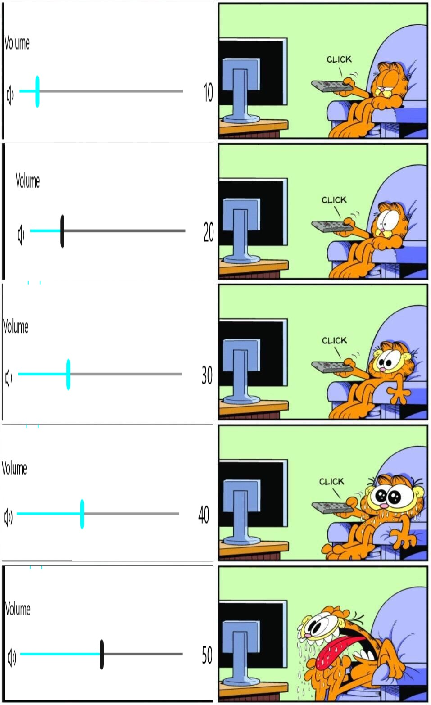

Meme Templates


| wat betekent de meme template? |
| naam |
betekenis |
| unbreakable balloon |
deze meme komt origineel van een gele ballon met het label "Positieve houding" en een kogel met het label "Kleine tegenslag" |
| retarded dog |
een persoon komt een hond tegen en vindt hem schattig, en dan zegt de hond iets wat waar niemand het mee eens is. |
| dumbest man |
de koning zegt i'm the dumbest man alive en dan zegt de andere iets heeeel doms |
| garfield |
deze kun je vergelijken met de upgrade, perfect meme maar deze heeft meer stages |
| scared girl |
een meisje zit op een ipad en dan wordt er een video afgespeeld op de ipad wat het meisje bang maakt |
zelf gemaakte meme
